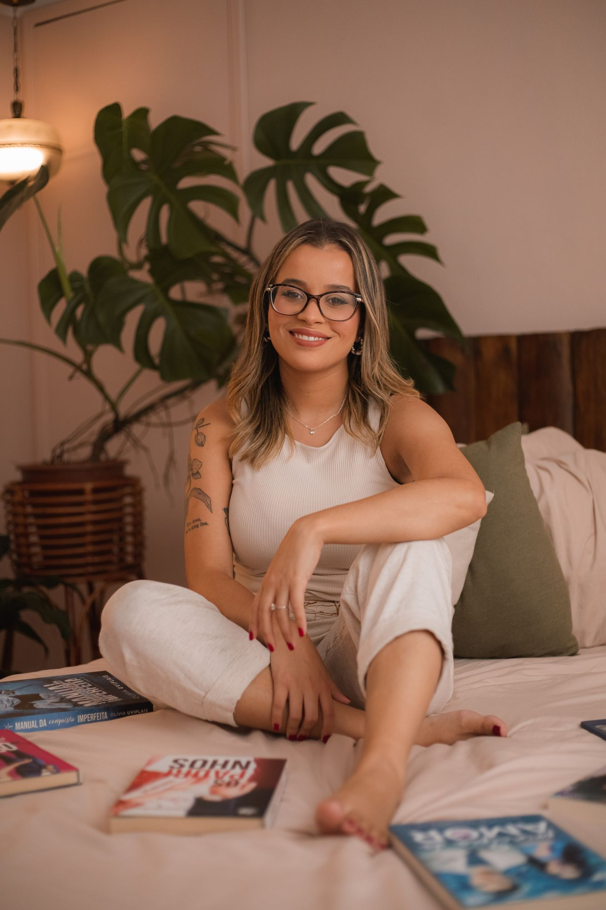

Criadora de mundos onde o amor sempre encontra um jeito

Criadora de mundos onde o amor sempre encontra um jeito

Quem é ela?
Escritora, jornalista e autora Best-Seller Amazon, é considerada a deusa das comédias românticas por seus leitores. Dedica-se a criar universos próprios, recheados de romances hot e dramas com desfechos apaixonantes. Sua escrita conecta de forma única o humor cotidiano com o friozinho na barriga que o gênero exige. Com vinte e poucos anos, Olivia já se estabeleceu como um nome indispensável na ficção feminina, entregando histórias repletas de paixão e os finais felizes que o mundo tanto precisa.
A jornada
Marcos que transformaram escrita, comunidade e carreira em uma mesma história.
✦ Lançamento em Destaque ✦
Escritora de Comédias Românticas
Escritora, jornalista e Best-Seller Amazon. Considerada a deusa das comédias românticas, cria universos recheados de romances quentes, drama e os finais felizes que o mundo tanto precisa.
Eu nasci no interior de Minas Gerais, em 1999. E, se tem algo que o mineiro faz bem, é prosear. O ato de contar histórias é quase intrínseco a quem vem de Minas Gerais e, por isso, sempre fui cercada por histórias, orais e escritas, que me encantavam.
Na minha cabeça de criança, não existia nada mais incrível do que um adulto capaz de contar histórias — e de escrevê-las. Talvez por isso minha primeira grande crise na pré-escola tenha sido um medo genuíno de não aprender a ler e escrever como as outras crianças. Eu achava apavorante a possibilidade de nunca conseguir transformar pensamentos em palavras.
Mas tudo deu certo, e eu fui alfabetizada como manda o Estatuto da Criança e do Adolescente.
Foi nessa época que os livros se transformaram em grandes tesouros nas minhas mãos. Lembro que vendedores passavam oferecendo boxes de contos de fada em formato de casinha, e minha mãe sempre se esforçava para comprar o tesouro que eu destruía em menos de vinte e quatro horas pelo meu ímpeto de me enfiar dentro das paredes de papelão
Já adolescente e uma verdadeira ratinha da biblioteca da escola municipal onde estudei, fui arrebatada pela história de uma garota de dezessete anos que se apaixonava por um vampiro. Desenvolvi uma verdadeira obsessão por Crepúsculo, e ler o livro quarenta e cinco vezes — literalmente quarenta e cinco vezes — não parecia mais o suficiente.
Na época, os primeiros capítulos de Midnight Sun haviam vazado, e eu não conseguia me contentar com o que estava disponível. E eu não era a única, já que, navegando em busca do resto do manuscrito, encontrei uma indicação que trazia uma palavra nova: “Já leram a fanfic que tem os outros capítulos?”. Eu não sabia o que eram fanfics, mas ninguém precisava dizer mais nada. Eu já estava lá dentro. Fanfiction.net e Nyah! Fanfics foram, provavelmente, meus sites mais acessados na adolescência.
Eu passava horas e horas lá, lendo Bella e Edward se apaixonarem, mas… nunca era do meu jeito. E isso começou a me inquietar. Nessa época, escrevi Second Chance, uma versão revisitada de Lua Nova com as minhas palavras. Ainda mais depressiva. E bem mal escrita. Eram meus primeiros passos escrevendo para outras pessoas lerem e, surpreendentemente — de verdade, era terrível —, as pessoas foram muito receptivas e gostavam da história. Essa conexão com outros leitores apaixonados por histórias como eu me compeliu a escrever cada vez mais fanfics — e jamais concluir nenhuma delas.
Quando entrei no ensino médio, as coisas começaram a ficar mais caóticas. Não podia mais passar tardes inteiras lendo e escrevendo fanfics de Crepúsculo. Tinha que estudar, pensar no ENEM, no que eu queria ser quando crescesse. Então fiz a única coisa sensata. Parei de escrever fanfics de Crepúsculo. E comecei a escrever histórias originais.
Hoje, dez anos depois desse momento, percebo que parte de mim estava meio revoltada. Eu devia estar fazendo cursinho, provas preparatórias para uma profissão que eu não queria ter. Tudo o que eu mais desejava não estava acessível para mim: ser escritora profissional. Ser autora. Algo que meninas pobres como eu não cresciam para ser.
Por isso, me isolei no meu mundinho e criei Adorável Babá, uma comédia romântica atualizada semanalmente, que não tinha planejamento algum e, mesmo assim, alcançou mais de um milhão de leitores no Wattpad. Foi um ano inteiro de trabalho que coincidiu com minha ida para a faculdade. Escrevi o último capítulo e fui cursar Jornalismo, que não era exatamente o que eu queria, mas era perto. Me resignei a conseguir o quase. Nunca seria uma escritora, mas seria uma jornalista. Ainda poderia contar histórias.
Só que esse novo momento trouxe os pesos do início da vida adulta. Vinda de uma família muito pobre, estudar numa universidade federal — mesmo em uma da minha cidade — era muito difícil. Na época, o restaurante universitário custava R$ 1,90 por refeição, e minha família e eu não tínhamos como arcar com os custos.
Foi então que alguém deixou a seguinte pergunta no meu mural do Wattpad: “Quando você vai colocar Adorável Babá na Amazon?”. Eu não sabia o que era Amazon, mas, numa rápida pesquisa, descobri que pagava. Então a resposta era: imediatamente. Juntei todos os capítulos em um arquivo no Docs, sem revisão, diagramação ou qualquer tipo de leitura profissional. Escrevi um capítulo bônus para atrair a atenção das pessoas e postei nos meus anúncios da plataforma: Adorável Babá estava na Amazon por R$ 1,99. Era um plano de mestre. Se cinco pessoas comprassem, eu teria dinheiro suficiente para almoçar no RU por uma semana inteira. Eu não fazia ideia de quais eram os trâmites necessários para lançar um e-book, quais eram as formas de marketing e divulgação. Só queria aqueles dez reais para comer por uma semana.
Quando procurei pelos dizeres “Adorável Babá Amazon” no Google, uma informação muito esquisita me chamou a atenção. Havia uma lista chamada “Mais Vendidos in Loja Kindle”, com cem e-books, e meu livro estava na décima sétima posição. Eu não fazia ideia do que aquilo significava, mas, quando fui ver o que tinha ganhado, esperando encontrar meus dez reais — segurança, talvez; a lista de mais vendidos tinha me deixado meio convencida —, eu quase não consegui acreditar no que estava vendo. Eram R$ 1.700, mais do que meus pais ganhavam na época com seus empregos. Fiz o que qualquer pessoa esperta faria com aquele dinheiro: dei metade para minha mãe e gastei a outra metade em créditos para almoçar no restaurante universitário e em livros.
No segundo mês, o valor caiu pela metade, e eu comecei a observar os outros livros da plataforma. As capas bonitas, as diagramações bem-feitas e nenhuma avaliação maldizendo Paulo Freire por ter alfabetizado os mais pobres e a consequência disso ser a porcaria daquele livro — essa foi a última vez que ousei ler avaliações das minhas histórias. Comecei a investir em serviços editoriais, criei uma página no Instagram e fui, aos poucos, construindo a presença digital da Olivia Uviplais — pseudônimo, já que, naquela época, eu ainda tinha certeza de que viraria uma grande jornalista na cobertura de guerras. Ainda não estava muito bem da cabeça.

A pandemia chegou e me confinou em casa no meio da graduação e no momento em que estava mais difícil conciliar escrita e estudos. A universidade fechou por um semestre, e eu tinha tempo. Fazia algumas semanas que a história de um casal que se odiava e precisava organizar um casamento juntos estava na minha cabeça, e decidi que, com todos aqueles dias ociosos, era hora de tirar a ideia do papel. Assim nasceu Os Padrinhos, um divisor de águas na minha carreira. Foram trinta semanas no Top 100, das quais nove foram no Top 10. Continuei a lançar, alcançar cada vez mais leitores e concretizar aquilo que parecia impossível. De repente, eu era escritora.
Minha formatura na graduação chegou e, quando conversava com os amigos sobre o que faríamos depois, eu era a única que não estava procurando emprego ou fazendo processos seletivos para a pós-graduação. Foi só no dia seguinte ao que peguei o diploma que percebi: pela primeira vez em mais de dez anos, eu não era mais estudante. Eu era uma trabalhadora. Escritora de comédias românticas. Desde então, tenho trabalhado todos os dias com isso, e ainda parece um milagre, ainda parece um sonho, mas, mais do que isso, ainda parece que sou a adolescente escrevendo por amor, por querer conhecer novos romances e colocá-los no mundo. E espero fazer isso enquanto existirem boas histórias para contar.
"Espero fazer isso enquanto existirem boas histórias para contar."
Seja muito bem-vinda ao meu mundo de clichês inesquecíveis, risadas e finais felizes.
Biblioteca
Romances, séries, contos e traduções reunidos em uma estante viva.
Filtrar por Trope:
Clipping & Imprensa
Reportagens, matérias, entrevistas e recortes de jornais e portais sobre a autora e suas obras.
Bastidores & Novidades
Bastidores da escrita, novidades em primeira mão e um espaço para conversar com você, leitor.
Por Olivia Uviplais
Próximos eventos
Feiras, lançamentos e encontros com leitores
Nenhum evento marcado por enquanto — mas vem coisa nova aí. Me segue no Instagram pra não perder o anúncio. ✨
Fale comigo
Para leitores, parcerias, imprensa e agenciamentos
Fale diretamente com Olivia Uviplais! Espaço aberto para leitores, parcerias, propostas de conteúdo e projetos criativos.
Fale com Thiago Oli para propostas comerciais, contratos editoriais, solicitações de entrevistas e demandas de imprensa.